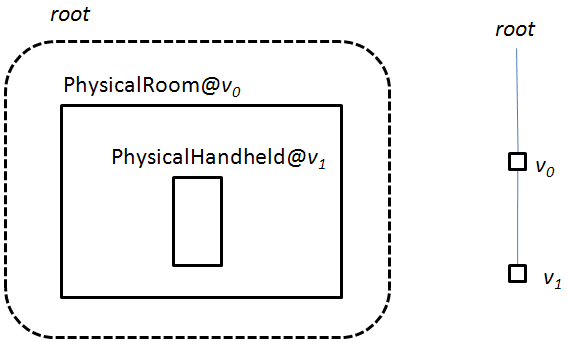
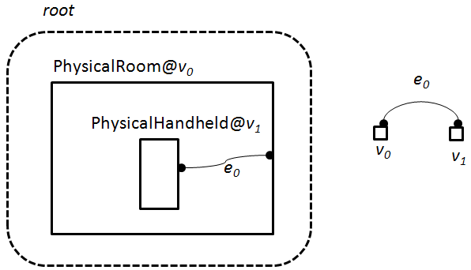
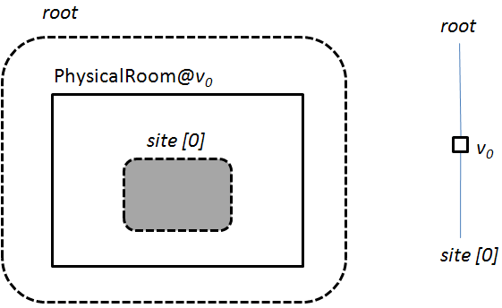

Chris Greenhalgh, 2009-06-29
Note that this is currently rather skeletal, and is likely to refer you to code and XML files for more information. The project is also in early evolution, so parts of it may become out of date relatively quickly. Still, better than nothing?!
Contents:
Bigraphs (Milner, 2009) are proposed as a formal model of systems having location, communication and behaviour. It has been shown that various other formalisms such as pi-calculus, CCS and ambient calculus can be mapped to bigraphs without loss, supporting the proposal that bigraphs might be a common representation for such systems.
A tuple-space (Gelernter, 1985) is a shared data store-cum-communication channel through which concurrent processes share tuples of data.
The bigraphspace project is built around a (currently Java) library that provides tuple-space-like API over a bigraph, rather than a bag of tuples.
The intention is to also develop a suite of supporting modelling/authoring/software development tools on top of this to support more general exploration of evaluation of bigraphs as an approach to modelling systems.
Most practical work with bigraphs to date has been done in the Laboratory for Context-dependent Mobile Communication, of the IT University, Denmark, initially within the Bigraphical Programming Languages project. The bigraphspace project has emerged in its current form from discussions and meetings between the Mixed Reality Lab, University of Nottingham, England, Robin Milner and members of the Laboratory for Context-dependent Mobile Communication.
The project draws particular inspiration from the with at ITU on ReactiveXML (Hildebrandt et al, 2006) and Bigraphical Location Models (Elsborg, 2006 and Elsborg, 2009).
The bigraphspace project is also the direct successor to the EQUIP and EQUIP2 object-oriented data-spaces (again, a twist on tuple-spaces, storing programming-language objects rather than tuples).
The bigraphspace project is hosted on sourceforge: http://sourceforge.net/projects/bigraphspace
The sourceforge project SVN repository is the main source/development repository. Its URL is: https://bigraphspace.svn.sourceforge.net/svnroot/bigraphspace
Currently there is one top-level directory/module, bigraphspace, which contains a reasonably standard Java project:
You will need a Java SE SDK and the Apache ANT Java build tool. I am currently developing using Java 1.6 and Apache ANT 1.7 (but at least some older versions should work - requires Java generics).
The other dependencies (currently bundled in lib/) are:Once Java and ANT are installed and the environment variable configured appropriately (JAVA_HOME set to JDK directory, ant and java in path) then ant can be used to build/test, e.g.
> ant ruletest
Some of the main ant targets are:A bigraph is a two part structure, which combines a place graph and a link graph. The common elements in the two graphs are nodes which model things (physical, digital or abstract). Each node has a control which is essentially the name of its type. Each node also has a set of ports (think connection points or fields), which in bigraphspace are identified by name (they are identified by ordinal in the pure bigraph model).
For most purposes - at least in bigraphspace - the place graph is the starting point. This is a hierarchical structure of nodes, with one or more roots. So a root can contain nodes, and a node can contain other nodes, and so on. Note that the child nodes of a node (or root) are unordered.
The following diagram illustrates a simple place graph which is intended to model a handheld computer in a room. The place graph has a single tree (starting at the single root), which in turn contains a node with control "PhysicalRoom", which contains another node with control "PhysicalHandheld", which does not contain anything. The place graph itself is shown on the right. The individual nodes are identified as "v0" and "v1" (this is their support - think unique name).

The link graph specifies how the ports of the nodes are connected. In general any set of ports can be connected by the one link. While not part of the pure bigraph model, it is very useful (and standard in bigraphspace) to have distinguished links which are constant. In particular, a constant value such as a number or string literal are modelled in bigraphspace (as in ReactiveXML) by a link whose name is the constant value and which is considered to connect to a univerally accessible that represents the constant value explicitly. Non-constant links simply represent connections between nodes (specifically between ports of those nodes).
For example, the PhysicalRoom control in the previous example might have one port "wifi" which represents its provision of local WiFi networking, while the PhysicalHandheld control might also have one port called "wifi" in this case representing its (possible) connection to the WiFi network The following diagram illustrates the combined bigraph (left), with the ports indicated by small dots, and the link graph only (right). The link (more specifically an edge) is labelled as "e0". Note that the link graph must be combined with the place graph from the first figure to describe the complete bigraph.

A bigraph can also include explicit "holes" where in general other nodes may be; these are termed sites. Bigraphs with sites are very important for describing bigraph "patterns", including the reaction rules which describe how bigraphs can change (see below).
Note that nodes, roots and sites are all considered to be places.
The folllowing diagram shows a bigraph that represents a "PhysicalRoom" node which contains anything, modelled by having a site as the only child of the PhysicalRoom node. The corresponding place graph is shown on the right. Note that roots and sites do not have ports; links into sites are handled through names, described later.

Note that there is active work to generalise bigraphs place graphs to Directed Acyclic Graphs (DAGs) rather than lists of trees, but this is not currently supported by bigraphspace.
The core bigraph model is represented in bigraph space by the interfaces:
These interfaces provide an abstract layer over whatever the underlying implementation is (at present it is an XML DOM internal model - see package bigraphspace.odel.xml).
(Note that the links depend on the Javadocs being generated - see ant target "javadoc")The work on bigraphs and ReactiveXML, e.g. (Hildebrandt et al, 2006) notes and exploits a strong correspondence between bigraphs and XML documents. Bigraphspace adopts and extends the mapping between bigraphs and XML for the (first) internal implementation and representation of bigraphs.
The mapping or encoding has two potential benefits: it allows prior understanding of XML documents to be leveraged when working with bigraphs, and it allows XML technologies to be exploited when implementing bigraph-based systems.
The essence of the mapping is simple: a place in a bigraph corresponds to an element in an XML document and a port in a bigraph corresponds to an attribute in an XML document. Consequently, a link in a bigraph must correspond to an attribute value in an XML document. Note that the intent is to faithfully represent the bigraph in XML, not (for example) the opposite. So not all XML documents correspond to valid bigraphs, and an XML-encoded bigraph must be treated as such to retain its validity.
The full mapping as currently implemented in bigraphspace is as follows:
For example the three previous diagrams are represented in the XML encoding as follows:
Example 1: no links.
<bigraph>
<root>
<PhysicalRoom _support="v0">
<PhysicalHandheld _support="v1"></PhysicalHandheld>
</PhysicalRoom>
</root>
</bigraph>
Example 2: lone link.
<bigraph>
<root>
<PhysicalRoom _support="v0" wifi="e0">
<PhysicalHandheld _support="v1" wifi="e0"></PhysicalHandheld>
</PhysicalRoom>
</root>
</bigraph>
Example 3: a site.
<bigraph>
<root>
<PhysicalRoom _support="v0">
<site index="0" />
</PhysicalRoom>
</root>
</bigraph>
The class bigraphspace.model.xml.XmlUtils has some general XML handling utility methods (e.g. read XML file).
The class bigraphspace.model.xml.DomBigraph implements the abstract bigraphspace.model.Bigraph interface using an XML DOM internal model.
Bigraphspace also supports a simple text encoding of bigraphs based on the bigraph term language in (Elsberg, 2006). See bigraphspace/parser/antlr/BigraphTerm.g for the ANTLR grammer:
The encodings corresponding to the above examples would be:
bigraph PhysicalRoom:v0 ( PhysicalHandheld:v1 )Note that the support (e.g. ":v0") is optional.
bigraph PhysicalRoom:v0{ wifi="e0" } ( PhysicalHandheld:v1{ wifi="e0" } )
bigraph PhysicalRoom:v0 ( _0 )
The generated lexer and parser classes are bigraphspace.parser.antlr.BigraphTermLexer and BigraphTermParser. An example of using them is in bigraphspace/parser/antlr/TestBigraphTerm.java.
A bigraph has a signature, which defines the set of controls that are allowed, and gives basic definitions for each control, in particular:
In addition a sorting (see below) may place additional constraints on how nodes can be nested and linked.
Bigraphspace defines a simple XML schema for various definitions, including signatures: etc/signature.xsd.
The signature for the above example could be (see etc/signature_bluetoothex.xml):<?xml version="1.0" encoding="UTF-8"?>
<definitions xmlns="http://www.mrl.nott.ac.uk/bigraphs/signature/1.0">
<controls>
<!-- physical world model -->
<control name="PhysicalRoom" status="active">
<description>A physical room (no, really).</description>
<port name="wifi">
<description>The availability of WiFi within the room</description>
</port>
</control>
<control name="PhysicalHandheld" status="active">
<description>A PDA-type device presenting local information</description>
<port name="wifi">
<description>Connection to a WiFi network (e.g. from room)</description>
</port>
</control>
</controls>
</definitions>
In bigraphspace, a signature is represented by an instance of the class bigraphspace.model.BasicSignature.
A signature can be created from a definitions XML file (XML schema etc/signature.xsd) using bigraphspace.model.signaturexml.SignatureFactory.
A sorting extends a bigraph signature with further constaints on how controls can be combined and linked, which typically represent the characteristic limitations and invariants of the modelled system.
For example, it is reasonable for a PhysicalHandheld to be inside a PhsyicalRoom, but not vice versa.
At present bigraphspace supports only simple sortings, which constrain which control(s) can appear as the immediate children of a non-atomic control.
By default, every control is assumed to be the only member of a sort of the same name. (Sortings are specified in terms of sorts rather than controls directly to allow an additional level of abstraction where required.)
The same definition schema (etc/signature.xsd) used for basic signatures (above) also allows simple sortings to be specified.
The sorting corresponding to the above Handheld/Room
constraint would be specified as follows, given the above signature (see etc/signature_bluetoothex.xml):
<?xml version="1.0" encoding="UTF-8"?>
<definitions xmlns="http://www.mrl.nott.ac.uk/bigraphs/signature/1.0">
...
<sorts>
<!-- implicit Sort corresponding to PhysicalRoom control (only) -->
<sort name="PhysicalRoom">
<childsorts>
<sort name="PhysicalHandheld"/>
</childsorts>
</sort>
<!-- implicit sort for PhysicalHandheld -->
<sort name="PhysicalHandheld">
<childsorts>
</childsorts>
</sort>
</sorts>
</definitions>
Note that the controls for a sort can be specified explicitly by <controls><control name="CONTROLNAME"/>...</controls>.
A bigraph (especially one with sites) can be thought of a pattern for another bigraph to be matched against. This is expecially important when considering bigraph behaviour, which is modelled as reaction rule (see below), which specify how the occurance of one bigraph (the redex) within another can be rewitten.
This "occurance" of a bigraph within another is formally defined using bigraph composition - please refer to Milner (2009) for more details on this.
It is sufficient as a starting point so simply think about finding an occurance of the redex (pattern) within the "target" bigraph, specifically that every node in the redex has a corresponding match in the target, such that:
This correspondence of nodes entails a correspondence of each root in the redex to a node or root in the target, and a correspondence of each site in the redex to zero or more sibling nodes (and their place sub-trees) in the target.
It sould be relative easy to see that the example bigraph with a site:
bigraph PhysicalRoom:v0 ( _0 )
matches the second example bigraph
bigraph PhysicalRoom:v0{ wifi="e0" } ( PhysicalHandheld:v1{ wifi="e0" } )
by identifying the PhysicalRoom node "v0" in the pattern with the PhysicalRoom node "v0" in the target. This implies that:
A match (correspondence) between a two bigraphs is represented by the (abstract) class bigraphspace.model.Match.
NOTE: this abstract is not currently (2009-06-29) implemented - you have to cast down to the concrete implementation bigraphspace.model.xml.DomMatch to access the match information (e.g. node and link value correspondences).
For the XML implementation, the class bigraphspace.model.xml.DomMatcher provides the match method to (attempt to) match two bigraphs. It returns a list of matches (the maximum can be specified).
Normally you would do this via the ReativeBigraph API (below). src/bigraphspace/model/xml/TestMatch.java and src/bigraphspace/model/xml/RunMatchTests.java give examples of using this directly.
The formal definition of bigraphs and matching (by bigraph composition) also depends on a bigraph's inner and outer names. An outer name is one which a bigraph gets (or could have got) from its context, i.e. the larger bigraph in which it is found. An inner name is one which a bigraph makes accessible to its parameter, i.e. to a bigraph that is found "within" it.
By default, bigraphspace assumes that all non-constant link values are both inner and outer names, i.e. they may also occur anywhere at all in the matched bigraph.
If a (potential outer) name in a pattern is marked as an edge, then it is explicitly disallowed from having "entered" the bigraph from its surrounding context. In practice this means that a pattern with a link value identified as an edge can only have that (non-constant) link value matched with a link that does NOT occur at all in the context of the match. Consequently, that link is in some sense local to the matched part of the bigraph (including its sites).
If a (potential inner) name in a pattern is marked as hidden (Note: this is our own term; in pure bigraphs it would simply be absent from the list of inner names), then it cannot occur within any of the part(s) of the matched bigraph that correspond to the sites of the pattern. This might be used to prevent information/links "leaking" "inwards" into parts of the bigraph.
The XML encoding of bigraphs defined above including details of how to encode edges and hidden (inner) names (as edge and hide elements).
Programmatically this information is exposed in the bigraphspace.model.Bigraph interface.
The behaviour of a bigraph is specified as a set of reaction rules. Each reaction rule specifies that occurance(s) of one bigraph, the redex, can be replaced with (copies of) another bigraph, the reactum, within the modelled system (the "target" bigraph).
The details of the "replacement" are specified formally in terms of bigraph algebra and composition - see Milner (2009).
Informally, the node(s) corresponding to the redex in the target are removed, and the copies of the nodes in the reactum are inserted into the target starting by mapping the Nth root of the reactum to the target node or root corresponding to the Nth root of the redex. Each occurance of a site in the redex is replaced with (a copy of) the nodes corresponding to the site with the same index in the redex. Nodes copied from the reactum are subject to the same mapping of (non-constant) link values and node support that was inferred by the match of the redex.
Note that (non-constant) link values in the reactum that do not occur in the redex are mapped to new globally unique link values (new links).
It is also possible for a reaction rule to rewrite (non-constant) link values that occur within its parameter (i.e. the nodes matched by the sites) but NOT within its context. This allows edge(s) in the parameter to be joined to other edge(s) in the paremeter, reactum and/or context.
Programmatically inner name rewriting is exposed in the bigraphspace.model.Bigraph interface.
For the XML implementation, the class bigraphspace.model.xml.DomTransformer implements the replacement of a (already matched) redex with a reactum in a target bigraph.Normally you would do this via the ReativeBigraph API (below). src/bigraphspace/model/xml/RunTransformerTests.java gives an example of using this directly.
A bigraphspace.api.ReactiveBigraph is a single bigraph (or possibly a fragment of a larger bigraph, but shouldn't be hiden by the system).
There is an example of use in bigraphspace/model/xml/RunReactiveBigraphTests.java
Depending on the approach adopted a single application might share a single reactive bigraph, or have several, each specialised for particular purposes.
A reactive bigraph is obtained initial from the class bigraphspace.api.BigraphFinder:
package bigraphspace.api;
public class BigraphFinder {
public static ReactiveBigraph getDefaultBigraph() throws BigraphNotFoundException;
public static void setDefaultBigraph(ReactiveBigraph defaultBigraph);
}
Note, at present this implementation is VERY limited and just returns a single default bigraph (if set). The reason for this indirection is to allow the same code to run in a deployed system and also in a simulated or emulated environment (e.g. for authoring or testing).
The reactive bigraph interface allows access to bigraph "sessions" via which synchronous operations (queries and updates) can be performed, and also to asychronous callbacks for event/change hanlding. We start with the synchronous API.
package bigraphspace.api;
public interface ReactiveBigraph {
public BigraphSession getSession();
....
}
A bigraph session is like a connection to the reactive bigraph. Actual access to the bigraph is bracketed by basic transaction boundary markers, begin() and end()/abort():
package bigraphspace.api;
public abstract class BigraphSession {
public abstract void begin();
public static enum Mode { readonly, readwrite };
public abstract void begin(Mode mode);
public abstract void end();
public abstract void abort();
...
}
Note that a readonly sequence of operations can be started using begin(Mode.readonly); read-write is the default.
It is possible to read or replace the entire bigraph. The latter is probably only for use in initialising a bigraph space:
public abstract class BigraphSession {
...
public Bigraph getAll();
public void setAll(Bigraph bigraph);
...
}
Reading from a bigraph space is normally done by using a pattern match as a query operation (compare the use of patterns in tuple-spaces for in/rd):
public abstract class BigraphSession {
...
public List<Match> match(Bigraph pattern, int maxMatches);
...
}
Updating a bigraph space is normally done by effectively applying a reaction rule, i.e. a reactum given a (particular) match for the redex. The match should be obtained using match (above) within the same transaction of the same session of the same reactive bigraph:
public abstract class BigraphSession {
...
public abstract void update(Match match, Bigraph reactum);
...
}
It is still something of an open issue how the reactive bigraph should behave asynchronously interactively with processes/agents. The current starting point is as follows, but potentially subject to major revision/extension.
The reactive bigraph API allows bigraphspace.api.BigraphChangedListeners to be registered with it. Every registered change listener is called (asynchronously, from a background thread) after every occasion on which the reactive bigraph is changed (i.e. by a bigraph session which commits after doing a setAll or update operation):
public interface ReactiveBigraph {
...
public void addBigraphChangedListener(BigraphChangedListener listener);
public void removeBigraphChangedListener(BigraphChangedListener listener);
...
}
package bigraphspace.api;
public interface BigraphChangedListener {
public void bigraphChanged(BigraphChangedEvent bce);
}
So simple reactivity is supported by registering a listener, which when executed will use its own bigraph session to (re)check for any "relevant" matches within the reactive bigraph, which might then lead it to make update(s).
There is basic support for a declarative version of this: the reactive bigraph API also allows bigraphspace.api.ReactionRules to be registered with it:
public interface ReactiveBigraph {
...
public void addReactionRule(ReactionRule rule);
public void removeReactionRule(ReactionRule rule);
...
}
These are checked (using the above mechanism) each time the bigraph space changes. A reaction rule comprises:
This facility can be used to implement simple bigraph execution/evolution.
The test file etc/rule_test.xml as used by bigraphspace/model/xml/RunReactiveBigraphTests.java gives some examples of possible reaction rules (in an XML encoding).
Elsborg, E. (2006). Bigraphical location models. Technical Report 94, IT University of Copenhagen, Rued Langgaards Vej 7, DK-2300 Copenhagen V. 87-7949-138-3.
Elsborg, Ebbe, 2009: Bigraphs: Modelling, Simulation and Type Systems. PhD Disseration, ITU (PDF)
Gelernter, David, 1985:
Generative communication in Linda. ACM
Transactions on Programming Languages and Systems, volume 7,
number 1, January 1985
Hildebrandt, T. T., Niss, H., and Olsen, M. (2006). Formalising
business process execution with bigraphs and Reactive XML. In
Ciancarini, P. and Wiklicky, H., editors, Proceedings of the
8th International Conference on Coordination Models and Languages
(COORDINATION), volume 4038 of Lecture Notes in
Computer Science, pages 113-129. Springer-Verlag. (PDF)
Milner, Robin, 2009: The Space and Motion of Communicating Agents. Cambridge University Press.